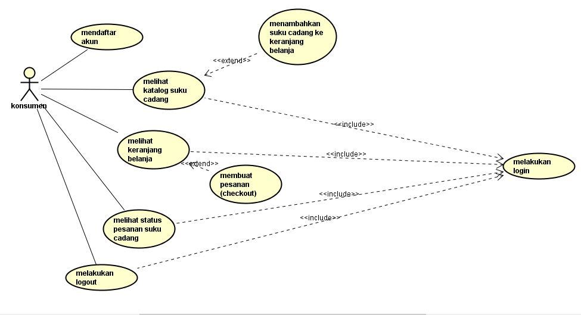

Nim : 1811500024
Nama : Ani Kinanti
Kelompok : TI6A
Hasil saya menyadur
1. Tentang kegiatan dan rencana perkuliahan, penjelasan sama seperti pertemuan sebelumnya yakni kegiatan perkuliahan melalui classroom, youtube, dan telegram channel & group.
Sedangkan rencana perkuliahan membahas tugas, uts, dan uas.
2. Selanjutnya penjelasan mengenai nilai kehadiran dengan cara login dulu ke akun github yang sudah ada sebelumnya, dan membuat folder yang namanya sesuai dengan pertemuan
yang ada. Contoh pertemuan 2 maka nama folder di isi 2, Setelah itu membuat file readme.md untuk kehidaran, cukup mengisi nim, nama, dan kelompok
di file readme.md dan selanjutnya mengkonfirmasi ke pengajar jika sudah selesai mengerjakan tugas untuk nilai kehadiran dengan mengirimkan link dari github kita.
3. Selanjutnya untuk perhitungan nilai tugas yaitu dengan cara menyadur apa yang kita simpulkan dari materi rekaman video yang di sampaikan pengajar.
Hasil saduran di upload ke repository github per direktori, yang di edit file index.html. Besaran nilai tugas di nilai berdasarkan kualitas saduran.
4. Pada pertemuan empat kali ini yang di bahas antara lain tentang usecase diagram dan deskripsi usecase (Usecase diagram untuk pengguna utama perangkat lunak,
usecase diagram untuk pengguna admin perangkat lunak)
5. Pengajar menjelaskan apa itu usecase diagram, yakni menggambarkan hubungan / interaksi / apa yang bisa dilakukan aktor dengan sistem, bisa 1 aktor atau lebih.
menggambarkan fungsi - fungsi yang dimiliki pada sistem, yang menggunakan sistem/pengguna/user, adanya aktor aktif (bagian kiri) dan aktor pasif (bagian kanan)
6. Penjelasan tentang Include => disertakan
• Suatu usecase lain membutuhkan usecase ini untuk syarat dapat dijalankan.
• Arah panah include mengarah pada usecase yang dibutuhkan.
• 1 usecase adalah bagian dari usecase lainnya.
• Contoh: untuk memanajemen data suku cadang, pelayan toko (admin) harus login kesistem terlebih dahulu.
7. Extend => pengembangan/berkelanjutan
• Suatu usecase yang dapat berdiri sendiri meski tanpa usecase yang lain.
• Arah panah exclude mengarah pada usecase yang menjadi induk (yang akan dikembangkan)
• Contoh: setelah melihat suku cadang, konsumen dapat memilih suku cadang (dengan cara menambahkannya ke keranjang belanja).
• konsumen pun dapat melihat keranjang belanja setelah memilih suku cadang (hasil extend memilih suku cadang)
8. Extend => perluasan/pengembangan usecase inti (panah ke arah usecase inti/induk)
Include => usecase tertentu memiliki kondisi/syarat/ketentuan yang harus terpenuhi/dibutuhkan
sebelum dijalankan (panah ke arah usecase yang diperlukan)
9. Pengajar menjelaskan beberapa contoh penerapan include dan extend
10. Penjelasan mengenai deskripsi usecase
misalnya untuk nama usecase login, maka deskripsi usecasenya adalah digunakan konsumen untuk masuk ke dalam aplikasi pemesanan suku cadang
Selanjutnya misalkan nama usecasenya melihat suku cadang, maka deskripsi usecasenya adalah digunakan konsumen untuk melihat katalog suku cadang pada aplikasi.
11. Penjelasan mengenai skenario usecase
• Setiap Usecase Diagram dilengkapi dengan scenario usecase yang merupakan alur jalannya proses usecase dari sisi aktor dan sistem.
• Skenario usecase dibuat per usecase terkecil, misalkan untuk generalisasi maka skenario yang dibuat adalah use case yang lebih khusus.
• Skenario normal bila sistem berjalan normal tanpa terjadi kesalahan.
• Sedangkan skenario alternatif bila sistem mengalami kesalahan.
• Skenario normal dan skenario alternatif dapat berjumlah lebih dari satu. Alur skenario inilah yang nantinya menjadi landasan pembuatan Sequence Diagram.
12. Relevansi usecase diagram
• Setiap usecase akan menjadi 1 rancangan layar / tampilan layar / tampilan antar muka dan memiliki 1 Sequence Diagram
• Generalisasi umumnya tidak dilakukan mengingat Usecase Diagram digunakan untuk menggambarkan inti apa yang bisa dilakukan pengguna ke sistem.
• Deskripsi usecase dan skenario usecase merupakan “satu paketan” yang dibuat sebagai tabel Deskripsi Usecase.
13. Selanjutnya pengajar akan mengajarkan dalam membuat usecase diagram dengan menggunakan astah comunity seperti biasanya
14. Pengajar menganjurkan untuk mencoba dan membuat file astah untuk usecase serta deskripsi usecasenya
15. Berikut hasil usecase saya dan deskripsi usecasenya sudah saya
Hasil file deskripsi usecase Disini
Hasil file project astah Download
